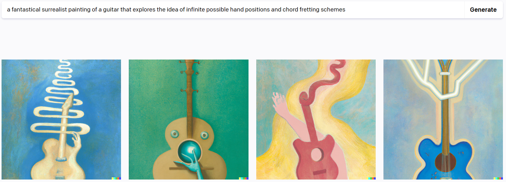
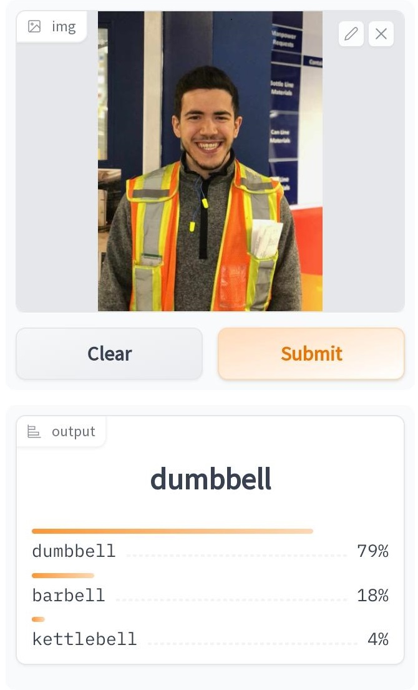

TL;DR
ChatGPT seems to be the real deal, but I wonder how much it’s answers break down in funky domains.
Capacity
The capacity of a model (as I understand it) is the measure of its output space relative to the true space of all possible outputs.
This is one of those times where I really feel it necessary to keep to a moer abstract definition, though I suspect friends may moan, groan and accuse me of blowing hot air. But when you think of the complexity of tasks that neural nets are performing these days, I think you have to carry these more abstract definitions in their full meaning to probe into the questions surrounding these tools.
For example, consider this image generated by the AI Dall-E1:

What is the true space of all possible outcomes for the prompt given? We can simply say it’s infinite. Just to begin to think about how many variations could be made to one of these outputs is mind boggling. What I had in mind when writing this prompt was an image of a guitar with a mass of ghostly hands on the instrument, as if seeing a motion blur of the hands from every song ever played on the instrument, at the same time. But it would seem that the output space of this model is much more limited than our imagination might suggest. As evidence I would simply point to the fact that each example output image features a guitar that is in the same position and orientation- center frame and upright. I have to wonder, if we generated a million outputs for this prompt, how many would share this feature? Another example you’ll probably enjoy a lot more: in this video where each phrase in the lyrics to Bohemian Rhapsody is used as a Dall-E prompt, you can see a significant bent toward images of female figures standing alone with their back to the viewer.
I don’t mean to be condescending about this, in the least. The implemention is amazing! But I see an analogue here with the promise of open world gaming: “Go anywhere, do anything, be anyone!”.. when in reality, your interactions with that virtual world are limited by the inputs available to you, and the ways in which those inputs have been programmed to yield some outcome in that world. It seems to me that what we’re sold by ChatGPT and Dall-E, indeed the entire domain of generative content creation, is this promise of an infinite domain of creative and created outcomes, but I have to wonder in which ways the capacities of these models, and thus their outcomes, are limited.
What’s In A Word?
I absolutely subscribe to the notion that words have power, in the sense that they both form and inform our thoughts, beliefs, and actions. A few words can throw the world into disorder, such as yelling “Fire!” in a crowded room2. Words are conceptual handles by which we can grip an idea, interact with it, understand, and deploy it. I think the key thing is that, while we might experience or ponder thoughts or ideas we can’t put words to, whether because they’re low resolution or completely novel, we cannot share those thoughts without the right words to communicate them. I see language as a compression tool used for transferring the indefinite world of thought that exists in one mind into that of another. Unfortunately, this free and open-source compression tool corrupts a lot of data along the way; it’s the root of all communication and miscommunication.
But as I mentioned earlier, words don’t just allow us to give form to our thoughts- it can go the other way as well. The availability of a word leads to it being used, and the fact of that word having been used then impinges on which word might come next. For example, when was the last time you heard someone say ‘wreak’ without it being followed by ‘havoc’? I’m sure these notions of recursive dependence are a sore subject for the pros in the world of large language models, but it leads me to wonder about the capacity of LLM’s with respect to computation.
Words As Projections Into Higher Spaces
I was and am truly amazed at ChatGPT’s seeming ability to abstract from language so as to draw conclusions and connections. My little test was to ask it about guitar chords. I provided the finger positions for an unorthodox chord ( 0,7,9,0,9,0 ) and asked it to name it. It told me it was a Bb6/9 chord, but an online tool purpose-made for this task reported it to be a E7sus2 chord. What I can tell you for sure is that I don’t have the music theory chops to know which is right, but when I asked GPT to make me a chord sequence suing that chord, and then to provide me with the finger positions to play each chord in the sequence, the finger positions it gave me for the ‘Bb6/9’ were not remotely similar to those I originally provided, and the sound didn’t bear any resemblance either except for the presence of one or two of the same notes. Also, when I asked it to name the chord for which it had just given me the positions, it switched its decision to a Bmaj7 chord, a much more common choice…
Where am I going with this? Just the suggestion that I would really hesitate to take any answers the model may provide as gospel, and most especially when they can’t be validated against any source of truth. I find it difficult to believe that a language model, anchored in words as it is, and constrained by them per the last section of this post, can truly achieve thought in the way that humans can. I see it as the problem of the one-way function3: the domain of abstract thought is the input, in this example, my understanding of the relationship between a guitars tuning, the fret positions on the neck, and the cloud of ideas around music theory and naming chords; one’s own facility with language is the one-way function, and the words used to describe the thought is the output. If language is a true one way function, it should be impossible to retrieve the full space of thought from the words alone. And yet, here we have this existence-proof, the implementaiton of chatGPT to spite me and my nay saying.
But I’m not yet convinced that the capacity of the model is delivered as promised. Another entertaining example. In this video you can see chatGPt playing chess, communicating with the standard notation for moves, and it is more than happy to make illegal moves. I thought this was hilariously unexpected, but it got me thinking about all of this. It tells me that in this domain, this wierd niche of reality (the game of chess), where text characters refer to pieces indexed to positions, constrained in their movement in a manner simple to describe visually or by numeric descriptions of offets, but a horribly strange function to learn and interpret if reduced to text alone, in this domain the task reveals the possibility that GPT, as great as it is at understanding how context affects the usage of words in relation to each other, can’t quite grasp the higher space of ideas that these strange sequences of characters are referring to.
These are just a couple of examples, but again, something to chew on. Let’s remember to keep our grains of salt handy for when we go consulting the oracle. Just because a function doesn’t throw an error doesn’t mean the output is correct. Though perhaps this is more readily explained by this example from one of my first image classification deployments:

And remember; Garbage In, Garbage Out.
Footnotes
https://openai.com/product/dall-e-2↩︎
My mind races to many more examples… All those thoughts that start with ‘What if I just…’↩︎
I laugh at myself because I used chatGPT to remind me of what the terminology was for a function whose inputs couldn’t be determined from its outputs.↩︎